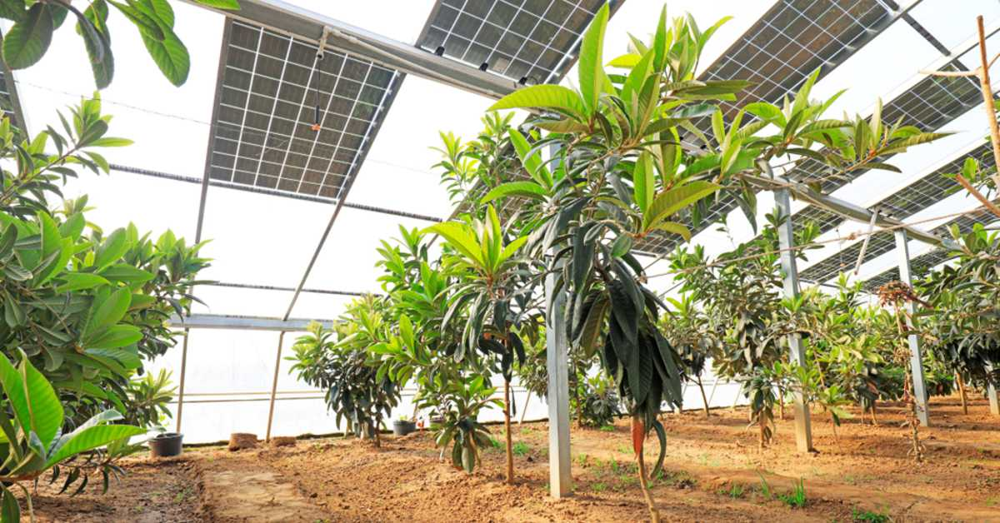

Güneş enerjisi, güneşteki hidrojen gazının helyuma dönüşmesi ile oluşan füzyon sürecinde ortaya çıkan ışıma enerjisidir. Güneş enerjisi en bol ve en temiz enerjidir. Çevreyi kirletmez, gürültüsüzdür. Yenilebilir ve sürdürülebilir bir enerjidir.

Güneş enerji sistemlerinin çalışma prensibi güneşten gelen ışınları fotovoltaik (FV) güneş enerjisi panelleri aracılığıyla yakalayıp doğru akıma (DC) dönüştürme şeklindedir. DC gücü pilde saklanabilir veya AC gücüne dönüştürülerek evlerde kullanabileceğimiz elektrik haline gelir. Fazladan üretilen elektrik enerjisi pil depolama sisteminde saklanabilir, veya elektrik şebekesine iletilebilir. Bu ayrıma göre 3 ana güneş enerjisi sistemi türü bulunur:
Şebekeye bağlı güneş sistemlerine verilen addır. Bu sistemlerde üretilen fazla güneş enerjisi kredi karşılığı doğrudan elektrik şebekesine iletilir. Pil gerektirmeyen bu sistemler en yaygın kullanılanlardır. Ancak elektrik kesintisi durumunda güvenlik nedeniyle çalışamaz.
Elektrik şebekesine bağlı olmayan ve pil depolama sistemi olan sistemlerdir. Fazla elektrik, pil depolama sisteminde depolanmaktadır. Genellikle elektrik şebekesinden uzak alanlarda ihtiyaç duyulmaktadır. On-grid sistemlere göre daha yüksek maliyetlidir.
Hibrit sistemler elektrik şebekesine bağlı olup aynı zamanda pil depolama sistemi de bulunan sistemlerdir. Gündüz üretilen güneş enerjisi gece kullanılabilir. Depolanan enerji tükendiğinde şebeke yedek olarak mevcuttur. Piller tam dolduğunda fazla üretilen güneş enerjisi şebekeye aktarılabilir.
Güneş enerjisi panelleri silikon hücreler, metal çerçeve, cam muhafaza ünitesi ve oluşan elektrik akımını aktarmak için doğrusal ve alternatif akım kablolarından meydana gelir.
Silikon, güneş ışığını emebilen ve kullanılabilir elektriğe dönüştüren iletken özellikli bir ametaldir. Güneş ışığı silikona çarptığı durumda silikon hücrelerin üzerindeki elektronlar harekete geçer ve elektrik akışını başlatır. Buna fotovoltaik etki denir. Bu elektronlar güneş paneli sayesinde DC gücüne dönüştürülür. Bu enerji depolanabilir veya AC gücüne dönüştürülerek kullanılabilir elektrik haline getirilebilir. Fazla enerji sistemin türüne göre elektrik şebekesine gönderilir. Gece veya bulutlu günlerde, güneş enerjisi yeterli olmadığı durumda şebekeden gelen elektrik kullanılır.
Güneş enerjisi sistemlerinin en önemli parçalarını ve işlevlerini şu şekilde sıralayabiliriz:
★ Güneş Paneli: Güneş enerji sisteminin en önemli parçasıdır. Panel sayesinde güneş ışınları toplanıp elektrik enerjisine dönüşür.
★ Akü: Güneş pili de denilen akü, panellerde üretilen elektrik enerjisini daha sonra kullanım için saklamaktadır.
★ İnvertör (Çevirici): İnvertör sayesinde panellerde üretilen doğru akım alternatif akıma dönüştürülerek kullanılabilir elektrik haline gelir.
★ Akü Regülatörü: Akünün tam olarak deşarj olmasına ve tam olarak şarj olmasına engel olur. Akünün ömrünü uzatır.
Elektrik enerjisinin üretilmesi noktasında güneş enerjisi çok büyük bir öneme sahiptir. Ülkesel bazda düşünüldüğünde ihtiyaç duyulan elektiriğin belirli bir oranı güneş enerjisi ile sağlanırken elektriğin olmadığı evlerde, ulaşılamayan bölgelerde basit düzenekler kullanılarak elektrik ve ısı üretimi oldukça kolay ve kullanışlı olabilir.
Güneş enerjisi, ürünlerin uzun vadede saklanması açısından büyük bir önem taşımaktadır. Ülkemizde özellikle yaz aylarında, güneş alan bölgelerde sık kullanılan bir yöntemdir. Yazlık meyve ve sebzelerin kış dönemi kullanılmak üzere kurutulmasına dayanan bir yöntemdir.
Özellikle tarımın yaygın olarak görüldüğü bölgelerde güneş enerjisi oldukça büyük bir önem taşımaktadır. Doğanın bizlere sunmuş olduğu imkanlardan biri de tarımsal faaliyetlerde yetiştiricilik olarak tanımlanabilir. Bu noktada güneş enerjisi kullanılarak tarımsal faliyetlerin sürdürülebilirliği sağlanmaktadır.
Gündelik yaşantımızda iletişimin sürekli olarak sağlandığı cep telefonlarımızda yaşadığımız büyük bir sorun şarjın hızlı bir şekilde tükenmesi. Telefonlarımızı bu denli yoğun kullandığımız bir dönemde güneş enerjisinden faydalanarak cep telefon bataryalarının şarj edilmesi artık mümkün.
Günümüzde trafik lambaları, trafik sinyal ışıkları, sokak lambaları, park ışıklandırmaları, park aydınlatmaları ve daha pek çoğu güneş enerji sistemlerinden yararlanır. Genelde akü, güneş paneli ve şarj kontrol ünitesi ile bu sistemi kurmak oldukça basit ve yaygın bir hale gelmiştir.

Artık yaşam dört duvar arasından çıkıp galaksilere uzanan bir yolculuk, bu yolculukta güneş enerjisi kullanılarak çeşitli sistemler geliştirilmektedir. Bu projeler 1950’li yıllara dayanmakta olup her gün daha yeni bir sistem ile karşımıza çıkmaktadır.
Hesap makinelerinde güneş enerjisinin kullanılması, çok uzun ve eski yıllara dayanmaktadır. Bu yöntem bir bakımdan sürdürülebilirliğin de en güzel örnekleri arasında yer almaktadır.
Daha önce de belirttiğimiz gibi güneş enerjisi paneller aracılığı ile toplanarak çeşitli alanlarda bizlere farklı kullanım olanakları sunmaktadır. Evlerimizde kullanmış olduğumuz sıcak ve soğuk su sistemleri de bunlara bir örnektir.

Özellikle kırsal bölgelerde, güneşin açık bir şekilde alınması sonucunda yansıtıcı maddelerin kullanıldığı kaplarda yemek pişirmek de mümkün. Fakat bu yöntem çok bilinmemekle birlikte Hindistan, Çin gibi farklı ülkelerde oldukça yaygın olarak kullanılmaktadır.
https://www.solarrelax.com
https://www.enerjisa.com.tr
https://tr.aliexpress.com
https://www.piagrid.com
https://www.elseroof.com
https://www.sefder.org
https://ekolojist.net
https://tureco.com.tr
https://www.hepsiburada.com